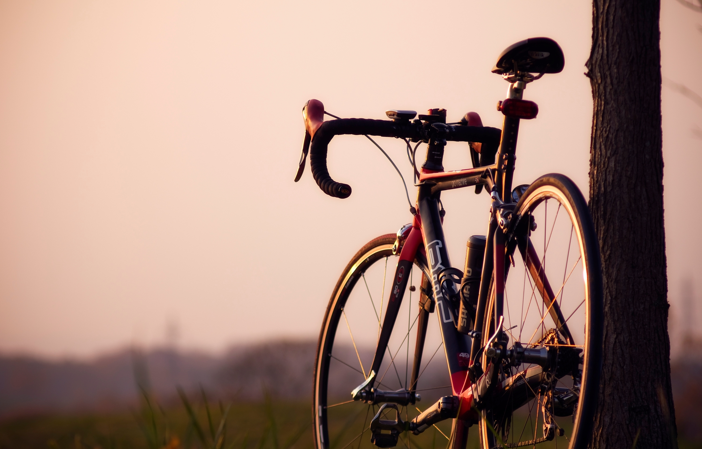
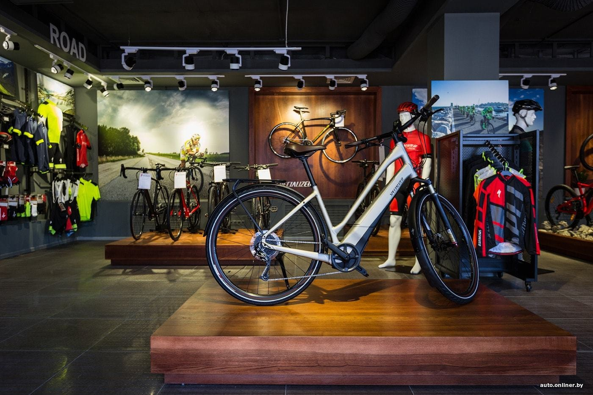
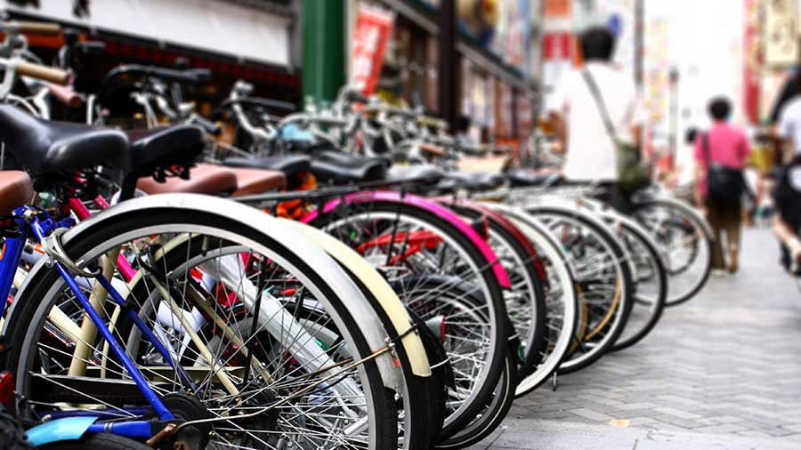

 Современный образ жизни - это сочетание динамики и здоровья, радости и открытий. Велосипед - прекрасный способ почувствовать себя вечно молодым, активным и покоряющим новые горизонты. Спортивные гонки и неспешные путешествия, выезды на пикники и соревнования между друзьями делают велосипед незаменимым атрибутом жизни современного человека. Разумеется, велосипед должен быть выбран именно под своего владельца, согласно его потребностям и вкусам. Широкий выбор велосипедов разных марок, которые представляют веломагазины, позволяет это сделать, правда, не без труда - слишком велик выбор!
 Продажа велосипедов интернет-магазине «Велозар» - это гарантия низкой цены и удобные условия доставки, изделия известных фирм от ведущих спортивных дизайнеров. Ведущие производители уделяют внимание не только скоростным качествам и комфорту езды, но и дизайну. Каждый велосипед - это индивидуальный образ, который становится частью образа его владельца. Он будет сопровождать вас в прогулках и далёких путешествиях, ждать каждой новой поездки и встречать вас с готовностью верного скакуна.
 Мы продаём товары, которые становятся вашими друзьями! У нас вы можете приобрести горный велосипед для себя, детский для своего ребенка, а также складные, женские и многие другие типы велосипедов. Выбрать и купить велосипед мечты.